前言一 单人极限通关的条件
什么是单人极限通关？单人通关指的是除了一个指定的人物外，我军其他人物不能获得任何经验值，保留加入队伍的原始级别和零经验通关。单人极限通关则是在单人通关的基础上增加了若干限制，用于挑战自己的极限。
因为所有战斗索尔必须强制出场，而且不能战死，所以选择索尔为单人通关的目标人物也就理所应当了。
单人通关的难度不在于击败BOSS，也不在于保护索尔，索尔炼级之后已经相当强悍，基本上没有什么危险。事实上，单人通关的最大难点在于如何保护战友。由于所有的战友都不能获得任何经验值，也就不能升级，生命值低、防御低，索尔只有一个人，如何才能照顾好那么多伙伴？如果队友战死也不影响通关也就罢了，大不了索尔单枪匹马，七进七出，也能摆平。可关键是部分关卡的失败条件就是队友不能战死。索尔常常发现自己砍得敌人七零八落时一不留神，让某某队友战死沙场，只能落得郁闷的“GameOver”结局。所以单人极限攻略的难点就在于如何更好地保护那些不能战死的队友。
既然是极限攻关，就要比一般的单人通关增加更多的限制条件，才能达到挑战自己的目的。本人设定限制条件如下：
1） 除索尔外，我军所有人员不能获得任何经验值。
2） 必须进入第30关隐藏关，击败最终BOSS空魔神。
3） 索尔必须尽可能地获得更多的队友。
4） 尽可能减少每关的出战人数。
5） 索尔必须得到隐藏道具勇者徽章转职为英雄。
6） 索尔必须尽可能多地拿到隐藏道具。
7） 队友在战场上只能进行以下行动：移动、休息、交换道具、使用药草系道具（药草、回复剂、再生药和神圣之水）和传送法杖。
为了减少S/L次数，本人使用了最大成长补丁，保证索尔每次升级可以获得最高的成长值。
前言二 挑战之前
挑战之前，必须对炎2有一个深入的了解，至少要知道以下几件事情：
1） 不论敌我，原地休息可以恢复20%的生命值，但人物处于中毒、麻痹状况除外。
2） 当敌人的攻击力低于我军防御力时，敌人会选择原地休息。
3） 村庄中存在隐藏商店，可以进入其中购买若干好的道具。
4） 人物如果不装备武器，就不能攻击或反击。
5） 地形对人物的攻击和防御有影响，例如：森林可以较少5％的攻击、增加10%的防御。但地形效果对飞行部队无效。
6） 有些关的友军有一个目标，在无敌人可以攻击的情况下，就会向向目标移动。而有些关的敌军也有一个目标，只要在他的攻击范围内出现我军，而目标又距离过远，他们就不会向目标移动。
本攻略属于极限攻略，如宝物的位置等一般攻略中可以找到的东西，我们在此略过，不再提及，敬请见谅。
第1关 传说之初始
胜利条件：敌全灭
失败条件：索尔死亡
出场人物：索尔、悠妮、亚雷斯、盖亚、哈诺（战场加入）、哈瓦特（战场加入）
战场分析：本关是游戏的第一关，我军初始战力四人：索尔、悠妮、亚雷斯和盖亚。第3回合增加两名友军：哈诺和哈瓦特；第6回合出现王国士兵。关卡结束后哈瓦特离队。本关地图中央有一所房子，房子右边只有一个入口，上方靠左也只有一个入口，实为易守难攻之地，主战场就可以在这里，让索尔尽情升级。
战斗流程：
第1回合开始，大家向主战场移动，同时卸掉索尔以外其他人的武器。怎么卸？将武器交给其他人就可以了。卸掉武器的目的是避免攻击/反击获得经验。以后战场上新加入的人物，也要进行这样的操作，卸掉他们的武器，避免获得经验。
第3回合我军继续右移，哈瓦特和哈诺出现，让他们卸掉身上的武器。
全军撤到主战场附近时，王国士兵出现，不过他们是打不过敌军的，我们也不用管他们的死活，全军撤退到房屋右侧小巷中，将皮甲交给哈瓦特装备，这样哈瓦特的防御力达到23，盗贼就不会攻击它了。
敌人会兵分两路，从左方和小巷处进攻。用哈瓦特在小巷出口的树林中堵路，右方的敌人攻击力比哈瓦特的防御力低，就会原地休息。亚雷斯、悠妮、哈诺堵住房子左边，他们防低血少，需要轮流抵御，依靠原地休息回复。当索尔的生命值为满值时，可以和哈瓦特换位置，让两个盗贼攻击他，依靠反击获得经验值（不要攻击盗贼，这样可能会被盗贼砍死）。当亚雷斯那边挡不住时，索尔有时还得临时卸掉武器过去暂时抵挡一两个回合获得经验值。具体情况如下图：
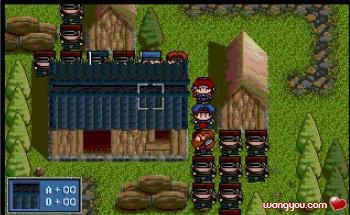
索尔升级到LV4后，装备布衣，可以站在哈瓦特的位置上，让哈瓦特去堵左边的出口，这样敌人就不会攻击我军了。索尔慢慢砍盗贼，不要杀死他们，他们因为攻击力不够，只能原地休息，回复生命。这样不砍死敌人，让敌人回复生命，以求多砍敌人几次多获取一些经验的方法成为“拷打”，以后还会常常用到。
索尔升级到LV5后，攻击力已经可以杀死满血的盗贼，借用网络游戏中的话来说，叫做“秒杀”。既然索尔已经能够秒杀盗贼，就不能留下盗贼拷打了。杀死部分盗贼后，将盗贼头目放到索尔身边，索尔改为拷打盗贼头目。
这样一直拷打下去，最后索尔杀死所有敌人（用战棋术语来说，称为“清场”）过关。但过关之前别忘了拿隐藏宝物。另外，别忘了将哈瓦特身上的道具都交出来（也称为“剥光”），反正他下一关就要离队了，不如贡献点道具给同志们换钱花。
本关有一个敌人身上有1000元，我为了从王国士兵中抢救他，哦，不是，是抢在王国士兵之前干掉他，盖亚因为掩护索尔抢杀士兵牺牲了。盖亚同志永垂不朽！
战后哈诺加入队伍。
过关情况：
第2关 罗德镇
胜利条件：敌全灭
失败条件：索尔死亡或村民全灭
出场人物：索尔、悠妮、亚雷斯、盖亚、哈诺
战场分析：本关我军将会遇到盗贼团袭击村民，如果救出全部村民，则可以得到村民德感激礼物：力量药水一个。所以，为了力量药水，哦，不，为了正义和真理，奋战吧！
当然，要全救村民也不是那么容易，有一两个村民离我们太远，很容易就会被敌人砍死，要拯救他们，高移动力的亚雷斯就是当然不让的人选。战前去购物，让所有人都带上一到两个药草。另外，把皮甲给亚雷斯穿上。由于上一关我的盖亚战死了，这一关必须把他复活，因为这一关需要他来当肉盾。好，现在出动。
战斗流程：
由于第3回合将有盗贼从上方的入口出现，所以那里将成为主战场。因此一开始，全军便向那里移动。
第3回合，亚雷斯达到主战场，他的位置非常关键，应该在第3回合增援敌军箭头下方一格处，吸引敌人火力。下一回合敌军出现，有三个人可以攻击到亚雷斯，以亚雷斯目前的能力，只能经受两次攻击，因此，务必使用Save/Load，让亚雷斯闪避一次攻击。
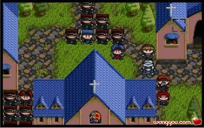
说明：亚雷斯的位置（第4回合开始形势图）
第4回合，亚雷斯不顾身受重伤，向左移动，将身上的药草喂给左边被砍得奄奄一息的村民，真是伟大的国际共产主义精神啊！（亚雷斯大叫：是谁把我踢过去的？索尔奸笑：谁叫你移动力高呢？）。这时大部队也刚到了，形成散兵线，挡住敌人，留出给村民逃命的线路。
第5回合：亚雷斯同志终于战死了，其他人也被砍得奄奄一息（索尔例外，LV9的他没人敢招惹），依靠药草补给，死战不退！
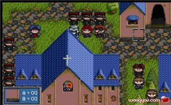
说明：为了村民，死战不退！感动中…（第6回合开始形势图）
终于，村民安全了，可全军也只剩下盖亚和索尔了，稍向右退，教堂右上角只能容纳两人，让索尔在教堂右上角战位，每次干掉可能冲过来的敌人，直到剩下一个LV2的盗贼。这时换盖亚上，LV2盗贼对盖亚的杀伤力，靠盖亚每一回合休息就可以补回来，索尔当然是去捡宝物了。最后让盖亚战死，索尔清场过关。力量药水入手。
战后希莉亚加入队伍。
过关情况：
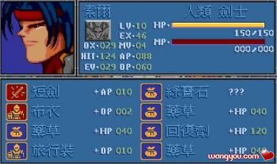
第3关 往塞拉村的途中
胜利条件：敌全灭
失败条件：索尔死亡
出场人物：索尔、希莉亚
战场分析：
本关如果能够救下铁诺，则铁诺可以加入，但我最后还是放弃了。因为敌人太多，索尔一个人忙不过来，药草不够，铁诺又不听使唤。希望能有达人能够达成拯救铁诺的任务。
战斗流程：
既然不救铁诺，那这一关就简单了，索尔拷打精英战士，然后清场过关。别忘了让希莉亚战死。
过关情况：
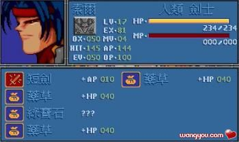
第4关 塞拉村前
胜利条件：敌全灭
失败条件：索尔死亡
出场人物：索尔
战场分析：
首先要做的事情是：卖掉力量药水和可以卖掉的东西，务必攒够20000元，到秘密商店购买一个风精之羽给索尔吃（这是索尔能拿到的第一个风精之羽），让索尔的移动力上升到5。
这一关敌人的法师开始出现。单人极限通关的情况下，敌人的攻击力比索尔防御力低，所以敌人的物理攻击可以无视。但法师的魔法攻击是固定伤害，无视防御。所以有可能，尽量先干掉法师，如果干不掉，一次也只能让1－2个法师攻击自己，耗光他们的魔法值，再做处理。
从今以后，索尔的优先攻击目标便是敌人的魔法师。
本关还可以拿到一个风精之羽，别忘了。
战斗流程：
一开始让敌人包围自己，不要急于杀死他们，用敌人挡住法师前进的道路，只让一个法师能攻击到自己，一个法师的火炎术杀伤接近50，刚好可以用原地休息回复，知道耗光法师的魔法值。如此陆续耗光所有法师的魔法值，就可以动手清场了。不过别忘了拿风精之羽（坐标：17，2）（这是索尔能拿到的第2个风精之羽，移动力上升到6）。
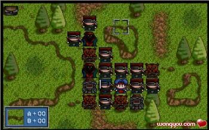
说明：中期战场态势（第104回合战场形势图）敌法师魔法值已耗光
过关情况：
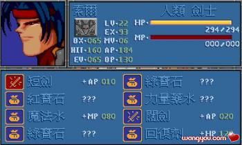
第5关 塞拉村
胜利条件：敌全灭
失败条件：索尔死亡
出场人物：索尔、玛琳（战场加入）
战场分析：
本关是十分普通的一关，没有什么可以多说的。
战斗流程：
让玛琳他们战死吧！索尔最后用玛特娜等人拷打。唯一要注意的是敌人残留的法师，不要被多个法师同时攻击。
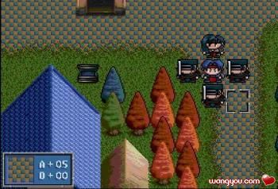
说明：拷打情况（第43回合战场形势图）
战后玛琳加入。
过关情况：
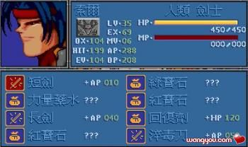
第6关 普里兹港
胜利条件： 敌全灭
失败条件： 索尔死亡
出场人物：索尔
战场分析：
这一关敌人的莱汀骑士团将出现，对于炎2新手来说，莱汀骑士团是不可战胜的，必须在他们来之前结束战斗。但对已经35级的索尔来说，莱汀骑士团只是一个笑话。
战斗流程：
没什么可说的，不要急于击破敌人，15回合后，莱汀骑士团出现。索尔大笑：“米粒之珠，也放光华？受死吧！”莱汀骑士团击破。
过关情况：
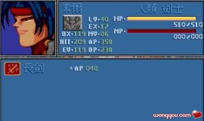
索尔已经达到40级，因为要到第13关才能获得勇者徽章，所以从下一关开始到第13关为止，将不再显示过关情况。
第7关 往王城的途中
胜利条件：敌全灭
失败条件：索尔死亡
出场人物：索尔、贝克威
战场分析：以索尔的实力，这一关没有任何问题。这一关如果在第10回合前冲过坐标（18，11）左右的地方，凯丽将会从战场右方出现。战斗结束时凯丽如果存活，则凯丽加入队伍。
战斗流程：
本关出战人物两人：索尔和贝克威。敌军的主要目标是贝克威，对于索尔，你认为40级的索尔有人敢招惹吗？既然贝克威强制出战，那就废物利用到底吧：让贝克威去拣左下角的宝箱，索尔从左边道路向上冲，只要索尔不挡住敌人的路，你就会发现一个奇怪的现象，大批敌人从索尔身边鱼贯而过，直扑左下角的贝克威。
敌人士兵：悄悄地路过，打枪地不要。避开杀星，柿子要挑软的捏。
贝克威：索尔大哥，不至于吧？那么多人你都放过来，是不是对小弟我有意见啊？
索尔：我们的目标是拯救凯丽MM，为了美媚，你就放心地去吧！
贝克威：如果是为了希莉亚公主，那还好说，凯丽那个男人婆，还是算了吧！
凯丽（头上火光闪闪）：贝克威，你说什么？
贝克威：啊！你……你什么时候到我身后的。我是说……今天天气真好啊！
凯丽：不用解释了，吃我斗士流最终奥义�D�D真.阿修罗破天斩！
悠妮：索尔，刚才有流星飞过吗？
索尔：是啊！你许愿了吗？
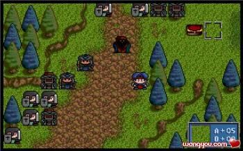
说明：敌人不敢搭理索尔，绕道而走。（第5回合战场形势图）
拯救凯丽前要注意干掉敌人的法师，拯救凯丽时要注意凯丽的HP，让她用回复剂，别让她战死了。至于贝克威�D�D贝克威同志永垂不朽！
第8关 王城前的战斗
胜利条件：敌全灭
失败条件：索尔死亡
出场人物：索尔、凯丽、洛娜（战场加入）
战场分析：这一关的敌人是主动进攻型的，虽然说肉搏战对索尔没有任何问题，但敌军有六名法师。如果你勇猛冲锋，就会发现六个火炎术或是电击术，让你一个回合就掉了两百多的血。所以，我们必须要利用地形，不能同时进入敌人几个法师的攻击范围。
战斗流程：
本关索尔和凯丽强制出战，第1回合洛娜也会加入队伍，要做的第一件事情是卸掉凯丽和洛娜身上的武器，然后让她们俩被砍死。索尔向左下角房屋后面溜。敌人会追上来，包围索尔，索尔这时只要休息，不要砍死敌人的士兵。敌人法师的移动力低，等到杀上来时索尔身前都是士兵，最多只有两个法师能靠上来放魔法，这点杀伤，索尔原地休息也就回复了。等到耗光前两个法师的魔法值，索尔就砍死两个士兵，再放两个法师进来用法术。如此这般，直到耗光所有法师的魔法值，索尔就再无后顾之忧，可以清场过关了。这一关坐标（4，44），即左下角长青苔的地方有风精之羽，别忘了拿（这是索尔拿到的第三个风精之羽，移动力上升到7）。
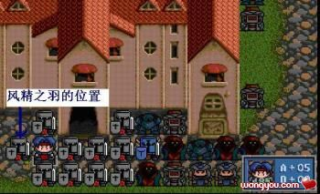
说明：敌人只有两个法师能攻击到索尔（第27回合战场形势图）
第9关 骑士的抉择
胜利条件：敌全灭
失败条件：索尔死亡
出场人物：索尔
战场分析：这一关没有什么难度。砍死莱汀后莱汀会回复生命到HP1。
战斗流程：索尔单枪匹马出战。敌人的法师不会主动进攻，砍人时注意不要落入法师的包围圈就可以了。本关没有什么难度。
本关十分简单，所以不配图了。
第10关 洞窟中的激战
胜利条件：敌全灭
失败条件：索尔死亡 卡纳恩三世死亡 索非亚死亡
出场人物：索尔、莱汀
战场分析：本关莱汀强制出战。到第20回合时，敌人在卡纳恩三世和索非亚侧下方的两个铠甲武士会去攻击卡纳恩三世和索非亚。所以开局索尔就要向上冲锋，尽快赶到卡纳恩三世和索非亚身边，解决这两个铠甲武士，保证人质安全。由于索尔需要赶时间，不能原地休息回复HP，所以要给索尔准备几个回复剂用于在路上恢复HP。
战斗流程：本关莱汀可以由玩家控制，他获得的任何经验值都不会带入下关，同样的，他的装备也不会保留到下关，下一关，电脑会给他自动生成装备。因此，第一件事情就是剥光莱汀，将他的装备道具全部交给索尔，好歹还能卖点钱。
开局后索尔就不停向上冲锋，以赶路为优先，杀敌为其次目标。一路上会有敌人的法师攻击索尔，索尔不能依靠原地休息来恢复，只能靠吃药恢复HP。至于莱汀，就让他战死吧。
我方会有友军前来支援，要注意Save/Load，不能让敌人因闪避友军攻击而获得经验，这样敌人会升级，攻击力等狂升。（这是炎龙II的一个BUG，以后还可能出现，请大家注意多用Save/Load的方式，避免这种情况出现。
第20回合前需要干掉去攻击人质的铠甲武士，之后的地魔神没有任何难度。
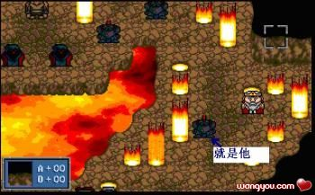
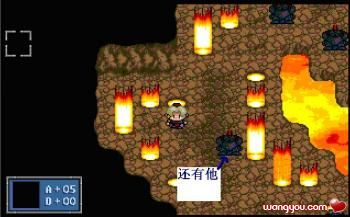
说明：解救人质需要干掉的两个铠甲武士。
第11关 幻之森林
胜利条件：敌全灭
失败条件：索尔死亡
出场人物：索尔、莱汀、希莉亚、珊、索非亚
战场分析：本关莱汀、希莉亚、珊、索非亚强制出战。
这一关的最大目标是从兽人手中抢夺星之眼，这是进入第30关的关键宝物。星之眼位于坐标（19，38）的宝箱中，必须赶快过去拿。因为本关的部分兽人会去开启战场上的宝箱，拿到箱中的宝物，然后向战场边缘撤退，如果撤退成功，你就拿不到宝物了。以后也会出现这样的情况，到时我会加以说明。
本关结束后，索非亚、莱汀加入，索非亚身上带有黄金徽章，是进入第30关的关键道具。
战斗流程：本关的敌人都是物理攻击系的兽人，对索尔没有任何威胁。索尔一开始就要向下冲，去拿星之眼，其他人随便拿拿周围的宝箱，就让他们战死吧。
拿到星之眼后，索尔就可以开始清场了，没有什么难度。
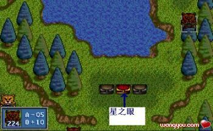
说明：星之眼的位置。
第12关 北山道
胜利条件：敌全灭
失败条件：索尔死亡 米亚斯多德死亡
出场人物：索尔、贝克威
战场分析：本关米亚斯多德不能阵亡，但他不受玩家控制，极有可能闷着头和敌人对砍，一不留神就阵亡了。而只靠索尔一个人，就算带满恢复药也不能保证米亚斯多德德安全。好在米亚斯多德本关有一个特点，就是会向贝克威方向移动。因此战前需要到教会中复活贝克威，然后带着贝克威出战。
战斗流程：战斗一开始，米亚斯多德会边打边往下冲，他身上带有回复药，短时间内没有什么危险。索尔向上冲，贝克威向战场最下方移动。
几回合后，索尔冲到前线，米亚斯多德摆脱了敌人，就会向贝克威移动，从此远离危险。索尔就可以砍人了。要注意的是，敌人中的兽人队长要放在最后杀死。因为一旦杀死兽人队长，战场中下方的山洞中就会出现两拨敌人的援军。因此要将兽人队长放到最后杀死，这样索尔才能脱身干掉敌人的援军，保证米亚斯多德的安全。
本关敌人身上会掉落一个风精之羽，（这是索尔拿到的第四个风精之羽，移动力上升到8）。
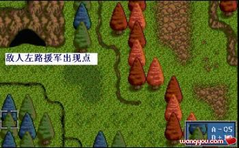
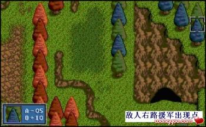
说明：敌援军出现方位
第13关 哈斯米尔之战
胜利条件：敌全灭
失败条件：索尔死亡 精灵族全灭 哈瓦特死亡
出场人物：索尔、凯丽、莱汀、洛娜、米亚斯多德、贝克威
战场分析：这一关是到目前为止最难的一关，也是单人极限挑战中四大难关之一。这一关的任务有四个：一，要拿到火之眼，这是进入第30关的关键道具；二，要拿到勇者徽章，这是索尔转职成英雄的关键道具；三，保证哈瓦特存活，战后他会加入；四，这一关的失败条件是精灵族全灭，因此必须要至少保留一个精灵存活。
拿到勇者徽章的任务，没有时间限制，对于索尔，并不困难。拿到火之眼，有一点难度，这一关会像第11关一样，出现兽人来抢宝物，因此索尔必须迅速赶到火之眼附近，干掉兽人，拿到火之眼。保证哈瓦特存活有点麻烦，但好在他老人家皮粗肉厚，跟上一个人给他吃回复药，也可以半岛。最难的任务在于保护精灵，本关的精灵太脆弱，几个敌人就可以收拾他们，所以本关的核心目标是保护精灵。
因此在战前要考虑出战人物，在保证尽量少的人物出战的情况下，能够有足够的人物给精灵吃回复药。出战的人物防御力和生命要高，否则带的回复药还没有用完，就被敌人干掉了，就浪费了携带的回复药了。经过多次试验，我选择的出战人选是：索尔、米亚斯多德、贝克威、莱汀、洛娜、凯丽。出战前给除索尔以外的其他人装备上最高的防具，再给每个人买七个再生药带在身上。
战斗流程：
战斗一开始，所有人分成三队。第一队是索尔，目标是抢火之眼。第二队米亚斯多德，跟上索尔，任务是喂出现的哈瓦特吃再生药。其他人作为第三队，向右上移动，目标对准精灵营地的右上角，前去救援精灵。
分析一下敌人的情况。敌人的兵种有三种：兽人、弓箭手和法师。威胁最大的是弓箭手，射程远，攻击力高，三四箭就可以干掉一个精灵；其次是法师，法术杀伤大，但法师的移动力比弓箭手低，威胁次于弓箭手；至于兽人，只有一格的攻击距离，只要选准地形，就没有什么威胁了。所以，需要优先干掉的敌人是弓箭手和法师。
战场上有很多宝物，但不能全部拿到，只要能保证拿到以下五个宝物就可以了：（39，19）的火之眼，（22，16）的风精之羽、（20，3）的20000元、（16，15）的30000元、（25，6）的勇者徽章（只有索尔能拿到）。
索尔一路右行，路上可以拿到的风精之羽（这是索尔拿到的第五个风精之羽，移动力上升到9），也可以不现在拿，以后让米亚斯多德来拿。抢宝物的兽人拿到火之眼后会向左移动，因此索尔可以不必冲得太远，让兽人拿到火之眼后再在半路上干掉他就可以了，因为索尔不必冲得太远，路上可以干掉三个弓箭手，减轻精灵弓箭手受到的压力。米亚斯多德靠近哈瓦特，他们两的防御力都不错，应该没有什么危险。
营地左上方有一个地方，只能容纳一个人通过，可以用防御力较高的莱汀堵住这里，兽人就过不来了，在莱汀身后有一个精灵弓箭手，其他人的目标就是全力保住这个精灵弓箭手，其他的弓箭手战死无所谓，反正只要不全灭就可以了。
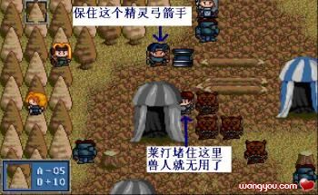
第7回合左上方战场形势图
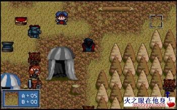
第7回合右下方战场形势图
拿到火之眼后，索尔向左上移动，路上干掉几个敌人的法师和弓箭手，来到勇者徽章那里。这时敌人的援军来到了，索尔可以卡在勇者徽章附近的出口，顺便还可以干掉一个弓箭手和剩下的法师。由于进攻路线被堵，敌人的援军会试图从莱汀的右上方向左进攻，哈瓦特应该已经将莱汀附近德敌人清扫一空了，所以让莱汀、米亚斯多德或洛娜去上方堵住敌人。此时敌人还剩下两三个弓箭手，只要注意Save/Load，不发生连击或会心，两三个弓箭手无法在一个回合干掉满血的精灵，只要注意每个回合给精灵吃再生药就可以了。
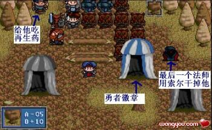
胜利在望！（第16回合战场形势图）
第14关 平原的会战
胜利条件：敌全灭
失败条件：索尔死亡
出场人物：索尔、莱汀、洛娜、米亚斯多德、哈瓦特
战场分析：索尔终于可以转职了！还犹豫什么，赶快去教堂转英雄吧！（移动力上升到11）
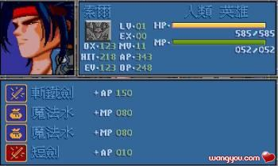
本关哈瓦特等人强制出战。
战斗流程：战斗开始，索尔他们就向上冲，让其他人战死吧！索尔冲到战场右上方，干掉敌人的法师，然后在右上方的缺口处休息。兽人大军团团围住索尔，可就是没人敢动手。索尔砍死几个人后，升级到LV4，学会再生术，再配合上两个魔法水，敌人的法师就没有多少威胁了。本关索尔的任务就是升级升级再升级。
过关情况：
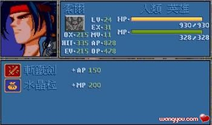
第15关 拉卡湖的激战
胜利条件：敌全灭
失败条件：索尔死亡 塞可邦勒死亡
出场人物：索尔、米亚斯多德
战场分析：本关需要从兽人的运输队那里抢夺光之眼（进入第30关的关键道具），同时还要拯救塞可邦勒，因此让两个人出战：索尔和米亚斯多德。索尔的任务是抢光之眼、清场过关。米亚斯多德的任务是喂塞可邦勒吃药。因此给米亚斯多德装上最好的防具，带满七个再生药。
战斗流程：
索尔一路向上冲，干掉两个敌人后冲破敌人堵截，向战场最上方移动，去抢光之眼。米亚斯多德向塞可邦勒方向移动。
第7回合敌人的运输队从屏幕最上方出现，用Save/Load方法，索尔一个神雷术干掉所有的兽人。米亚斯多德这时也移动到塞可邦勒身边了。米亚的防御力比塞可邦勒低，敌人会攻击米亚斯多德，靠再生药挺过去。
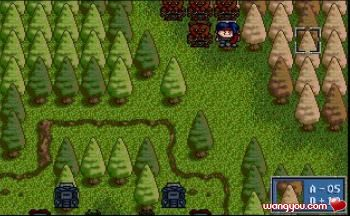
兽人运输队出现，可以抢光之眼了（第8回合战场形势图）
索尔拿到光之眼后下移，正好堵住敌人的第二攻击波，用Save/Load方法，神雷术解决他们。
清场的时候，要注意右下方刚才没有杀的敌军对塞可邦勒还是有威胁的。稳妥的解决办法是让索尔移动到离敌人较远的地方，塞可邦勒会跟过去，索尔和敌人的距离一个回合就可以达到，塞可邦勒要两个回合还不够。然后索尔下去干掉一个敌人，塞可邦勒跟上，走到半路，索尔下一回合回到原处，塞可邦勒又跟索尔返回。这样塞可邦勒不会走到敌人攻击范围内，十分安全。
过关情况：
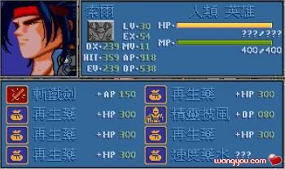
第16关 冰原之战
胜利条件：敌全灭
失败条件：索尔死亡、蜜蒂死亡、蜜蒂的部下阵亡一半以上
出场人物：索尔、塞可邦勒
战场分析：本关战前的秘密商店中可以买力量药水，除给索尔留一把短剑作为武器，再留一个水晶粒（有用）外，把能卖的东西都卖了。卖东西后的钱全部用来买力量药水。以后出战时如果有可能，给出战人员带上几个力量药水，喂给索尔吃，让索尔有足够的攻击力单挑空魔神。（我只买了44个）如果你没有那么多钱，也没关系，尽量买吧，反正多几个少几个对后面的战斗没什么影响。
本关如果在18回合内结束战斗，且索尔的HP在320以上（早达到了），战斗蜜蒂会加入队伍。
为了在18回合内解决敌人，索尔必须使用大范围、强威力法术（神雷术）。因此需要在索尔身上保留一个水晶粒，防止索尔的MP不足。
战斗流程：
本关蜜蒂他们还算比较安全的。索尔向下冲，用Save/Load方法，尽量用神雷术解决更多的敌人。有索尔的帮忙，蜜蒂他们非常安全。
本关敌人数目不少，所以索尔的走位必须能让他用神雷术攻击到更多的敌人。保持这个原则，18回合解决对手不困难。索尔后面MP会用光，这时可以使用水晶粒回复MP。
过关情况：
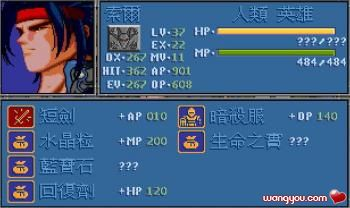
第17关 血与冰之刃
胜利条件：敌全灭
失败条件：索尔死亡
出场人物：索尔、米亚斯多德、蜜蒂
战场分析：本关开始可以选择出场人物了（因为没有救铁诺，比原来晚了一关），在选择出场人物时，可以选择已经战死的人物。电脑会将已战死的人物算作出场人物，但实际上战场上根本就没有这号人物。
本关消灭水魔神可以得到水之眼，是进入第30关的关键道具。
战斗流程：
米亚斯多德的任务是拣小岛上的宝物。蜜蒂闪一边去（可以用索尔的传送术将她传送到角落的小岛上）。必须要拿到的宝物有：（1，2）的控制中枢、（25，18）的风精之羽。（这是索尔能拿到的第六个风精之羽，移动力上升到12）
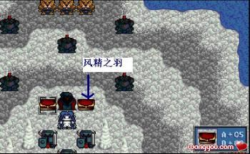
剩下的就简单了，索尔慢慢绕圈子清场就可以了，唯一要小心的是敌人的魔法师。
最后消灭水魔神时，索尔身上要留一个空位存放冰之眼。
过关情况：
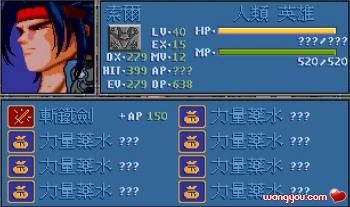
第18关 遥远的彼岸
胜利条件：消灭黑暗骑士
失败条件：索尔死亡 约拿死亡 兰斯洛特死亡
出场人物：索尔、蜜蒂、塞可邦勒、凯拉斯、米亚斯多德
战场分析：又碰到难关了。这一关是单人极限挑战的四大难关中的第二关。
这一关的难点在于拯救约拿和兰斯洛特。有了第13关的经验，打起来要得心应手的多，所以这一关的难度也比第13关低。
既然要保护约拿和兰斯洛特，那么肉盾也是必不可少的：蜜蒂、塞可邦勒、凯拉斯、米亚斯多德。四个肉盾可以形成一道防御线。给他们装上最好的防具，带满回复药品。
战斗流程：
敌人会从两边杀过来。因此首先全军右移，索尔站在离最左边的突击骑兵18格的地方，以突击骑兵8格的移动力，第3回合右边杀过来的五个骑兵正好全部笼罩在神雷术的攻击范围内。其他人向索尔左边移动。
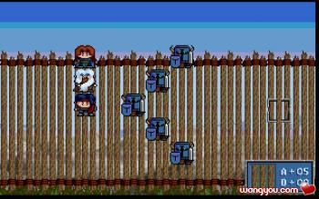
送到神雷术攻击范围内的敌骑兵（第3回合战场形势图）
第3回合，索尔要用Save/Load方法，一回合用神雷术解决五个骑兵，使约拿受到的威胁减轻。
其他人在约拿左边3－4格布成扇形分布，准备阻截左边出现的敌援军。右边冲过来的其他敌人，索尔负责解决掉法师，弓箭手交给约拿用圣光弹解决。敌人新出现的兵种魔鬼会高攻击法术，只不过他们的MP只能使用一次法术，让索尔主动去吸引魔鬼释放法术，然后魔鬼就没有什么威胁了。
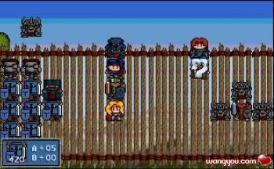
敌援军出现！（第9回合战场形势图）
第9回合敌人援军出现，所有人在左边布阵。索尔要用神雷术一回合解决所有的敌人弓箭手，他们是约拿的最大威胁。敌人可能会攻击米亚斯多德（他的防御最低），撑不过就让他战死吧，但一定要保留下其他几个人。
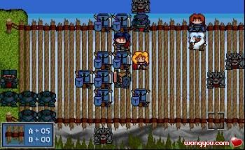
防御线（第10回合战场形势图，米亚斯多德已经战死）
第10回合，敌人的弓箭手已经全灭，索尔的任务是用神雷术解决掉大量骑兵，约拿就更安全了。
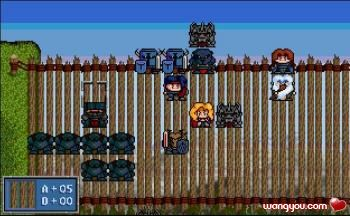
敌军主力已经被歼灭。（第11回合战场形势图）
第11回合开始，索尔要先全歼左边敌军。然后全军移动到左边的楼梯处。索尔移动到楼梯最下方，约拿和兰斯洛特会跟过来，然后蜜蒂、凯拉斯、塞可邦勒跟上，分别排在兰斯洛特上面。这时索尔向上离开，约拿想跟索尔一起行动，可他的移动力只有4，上面4格又都被人占据，所以只好休息，兰斯洛特跟随约拿，也只有休息。这样索尔就解放出来，可以清场了。
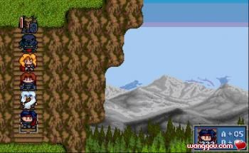
为了解放索尔（第26回合战场形势图，这时索尔可以向上离开去清场了）
第19关 黑暗中的狙击
胜利条件：
失败条件：索尔死亡 巴拿罗西亚死亡
出场人物：索尔、巴拿罗西亚（战场加入）
战场分析：以索尔现在的能力，敌人的肉搏战部队对索尔没有什么威胁，但敌人的法师就需要特别防范。本关的敌人是主动出击型的，如果索尔被敌人围住，几个魔法师炎龙术一起招呼上来，索尔只有完蛋的份。因此索尔必须发挥高移动力的长处，跟敌人打游击战，以解决敌人法师为目标，绕着绕着就将敌人的魔法师全部干掉。因为要打游击战，不能原地休息，因此需要给索尔带上一个神圣之水以备万一。至于巴拿罗西亚，往战场坐下角一躲，敌人会忘了他的。
战斗流程：开战后，索尔就向上移动，注意不要被敌人包围了，利用高移动力带着敌人到处乱转。敌人的法师移动力低，又容易停下来用攻击术，所以容易找到漏洞，索尔远程突袭，一击必杀，颇有关羽斩颜良诛文丑的气概。
第20关 死亡般的沉寂
胜利条件：除沼泽怪物外的敌人全灭
失败条件：索尔死亡 谢多死亡 精灵全灭
出场人物：索尔、巴拿罗西亚、谢多（战场加入）
战场分析：本关如果能在15回合内结束战斗，则魔族达克塞加入，可惜以索尔的能力，要在15回合内解决战斗有点困难（主要是敌人分布较广），因此只能忍痛放弃达克塞。
本关谢多不能战死，精灵不能全灭，但本关和第13关有不同的地方：一：本关的敌人主要是被动型的，不像第13关是主动型的；二、本关拿暗之眼什么时候都可以拿，第13关必须抢时间；第三、本关索尔的能力比第13关强得太多；第四、本关地形比第13关好，谢多左边的楼梯附近可以堵路。
为了谢多不战死，需要一个人给谢多喂药吃，自然选择刚刚加入的巴拿罗西亚，给他带满神圣之水。
本关必须拿到暗之眼（31，8），是进入第30关的关键道具。这个位置有一个黑暗战士把守，要先消灭他，然后让巴拿罗西亚去拿。
战斗流程：
第1回合，索尔传送巴拿罗西亚到楼梯处上面一点的位置，谢多移动到巴拿罗西亚西方，这样就把路堵死了。只有一个敌人的武术家和法师能攻击到谢多，靠神圣之水可以撑过去。
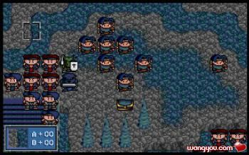
用谢多和巴拿罗西亚堵路（第2回合战场形势图：中央）
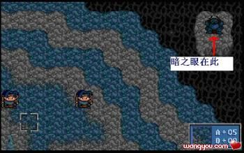
把守暗之眼的黑暗战士（第2回合战场形势图：右上）
索尔迅速通过沼泽，向谢多方向赶去，可以在神圣之水用完前（我还剩4个，很安全），解决可以威胁到谢多的所有人。
谢多回到中央高地休息，精灵会聚集在谢多周围，没有人能攻击他们。
索尔清场，注意用圣光弹解决把守暗之眼的黑暗战士，然后让巴拿罗西亚去拿暗之眼。
第21关 亚述森林
胜利条件：敌全灭
失败条件：索尔死亡 希尔法死亡 罗兰死亡
出场人物：索尔、约拿、哈瓦特、塞可邦勒、谢多、凯拉斯、巴拿罗西亚、兰斯罗特、米亚斯多德、希尔法（战场加入）、罗兰（战场加入）
战场分析：本关结束时，索尔必须带上黄金徽章、光之眼、水之眼、火之眼、暗之眼和星之眼，希尔法会将它们合并成天空之钥，这时进入第30关的必要道具。
这一关又非常难，是单人极限挑战四个难关的第三个。这一关敌人是主动攻击型的，希尔法和罗兰两个人怎么抵挡得住？索尔离他们又很远，必须经过好几个回合才能感到，他们怎么能够撑到索尔赶到？敌人的魔鬼是空中战力，无视地形，又会高级攻击法术，能力于第18关想比不可同日而语。可是，为了完成单人挑战的极限，我们只能硬着头皮上。
第一次挑战，希尔法被骑士秒杀，GameOver。
第二次挑战，罗兰被轰雷术干掉，GameOver。
第三次挑战，希尔法在魔鬼爪下饮恨，GameOver。
……
经过多次尝试，我们只有带上最强的炮灰，才能阻挡敌人攻击希尔法和罗兰的企图。
所以，出战人手选定：索尔、约拿、哈瓦特、塞可邦勒、谢多、凯拉斯、巴拿罗西亚、兰斯罗特、米亚斯多德。这些人，防御力都还可以，生命值也还不错，至少不会被一个敌人秒杀。给他们装上最好的防具，每个人带满七个神圣之水，出发吧！
在出发之前，要注意调整出战次序，让约拿在九个出战人选中排在最后。因为约拿此战必须出战，而他又发挥不了什么作用，因此让他排在第九个位置，这样前八个人将部署在战场有方，约拿单独在战场左方，可以集中兵力。
调整出战顺序的方法是选择出战人员后，不选YES进入战场，选择NO。然后再进入人物选择画面时，人物的排序会发生变更。已选择的人物会排在前面。重复多次，直到人物选定符合我们的要求。
战斗流程：
第1回合，我军除约拿以外的其他人在战场右方，约拿在战场左方，希尔法和罗兰战场加入。
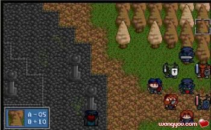
出战（第1回合战场形势图：右方）
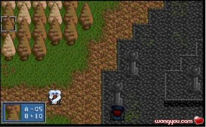
孤独的约拿（第1回合战场形势图：左方）
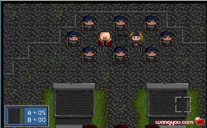
拯救的目标（第1回合战场形势图：中央）
约拿向左上行动，吸引敌人左边的部队过去，他可以战死，没有关系；会飞的龙剑士向希尔法方向飞行。希尔法和罗兰向右方移动。索尔将不会飞行的部队传送到希尔法周围。
在希尔法右下的石碑右方，有一处缺口，让谢多站在这里堵路。兰斯洛特、巴拿罗西亚在他上方，封住左边来的敌军攻击希尔法的可能。龙剑士、塞可邦勒、哈瓦特灵活运动、阻挡后来出现的魔鬼，并负责补给药品。只有法师和一个武术家能攻击到谢多，还不至于一个回合将他干掉，用神圣之水挺。
这时精灵弓箭手也差不多没几个了，不过这一次他们表现出色，干掉了希尔法附近所有的祭师。否则敌人的祭师使出回复性法术，那才叫讨厌呢。
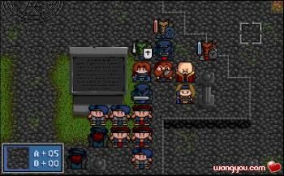
炎龙II中的黄继光－谢多（第7回合战场形势图：中央）
索尔迅速向中央赶，路上遇到敌人的右方骑兵部队。
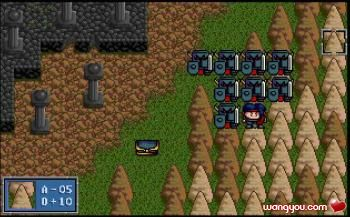
敌军右方骑兵部队（第7回合战场形势图（右方）
索尔不能恋战，迅速摆脱敌人的骑兵部队，向中央移动，目标，拯救希尔法等人。
第9回合：索尔快到了，敌人的魔鬼也接近了，怎么办呢？
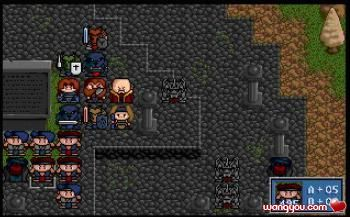
敌魔鬼接近（第9回合战场形势图）
让龙骑士筑起肉盾长城，保护希尔法。
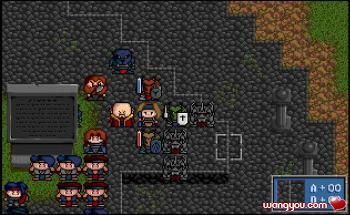
保护希尔法（第10回合战场形势图）（索尔已经赶到，顺手干掉了一个法师）
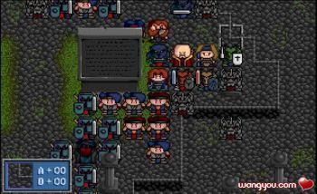
索尔终于到达（第11回合战场形势图）（敌人的骑兵也追上来了）
索尔要用裂地术攻击敌骑兵和弓箭手，但敌人骑兵的HP高，不能一次搞定，但也要用Save/Load尽量杀伤更多的骑兵。但第一次必须干掉所有的弓箭手。
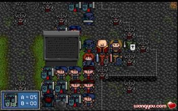
被裂地术洗礼后的骑兵（第12回合战场形势图）（骑兵只剩38点HP）了。
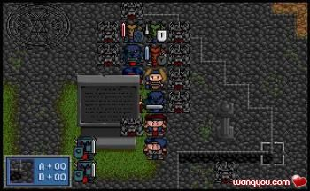
裂地术清场，大部分骑兵都被干掉，敌人主力变成魔鬼（第13回合战场形势图）
这时敌人的部队已经集中到中央，战场的四个角落也不会再出现魔鬼，可以将希尔法等人传送到战场右下角，这是安全区域。
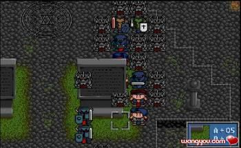
罗兰已经被传送出去（第14回合战场形势图）
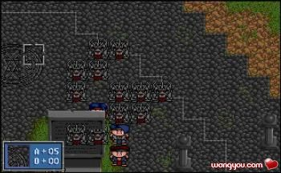
炮灰全部战死（第15回合战场形势图：中央）
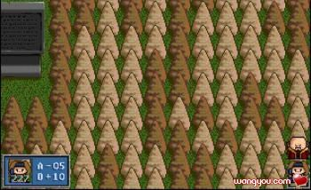
希尔法和罗兰达到安全位置（第15回合战场形势图：右下）
后面索尔就可以轻松地清场过关了。
本关（34，20）有风精之羽，别忘了拿。（这是索尔能拿到的第七个风精之羽，移动力上升到13）
第22关 远古的呼唤
胜利条件：敌全灭
失败条件：索尔死亡 希尔法死亡
出场人物：索尔、希尔法、谢多、巴拿罗希亚、莎拉（战场加入）
战场分析：这一关又非常难，是单人极限挑战四个难关的最后一个。本关希尔法强制出战，但又不能战死。以这么弱的希尔法，怎是如狼似虎的敌人的对手。这一关战场范围小，难以找到绝对安全的地方。敌人的魔鬼和上一关一样讨厌。怎么办呢？
经过多次试验，我决定派索尔、希尔法、谢多、巴拿罗希亚四人出场，带上最强防具，装满神圣之水。
坐标（23，25）处有风精之羽。（这是索尔能拿到的第八个风精之羽，移动力上升到14）。
从这一关开始到第25关，是连续战，没有村庄可以补给。
战斗流程：
第1回合，将巴拿罗西亚传送到坐标（12，12）的地方，弓箭手会向左下移动攻击巴拿罗西亚，其他敌军向巴拿罗西亚移动。
第2回合，传送希尔法到坐标（14，11），巴拿罗西亚下移一格。敌人的弓箭手会攻击希尔法，魔法师会使用地震术，多Save/Load几次，可以刚好不能杀死希尔法（HP剩个位数），可以靠神圣之水挺。骑兵攻击巴拿罗西亚，杀不死他。
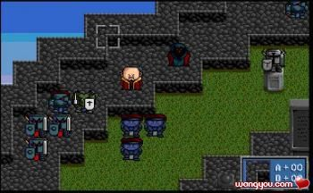
巴拿罗西亚与希尔法（第3回合战场形势图：左上）
第4回合，敌人的黑暗杀手赶到巴拿附近时，让巴拿罗西亚向上移动一格，希尔法向上移动一个，将谢多传送到希尔法的右边。敌人的弓箭手先行动，会占据巴拿罗西亚原来的位置；敌人的黑暗杀手其次行动，会占据弓箭手原来的位置。这样敌人的骑兵便被堵住，上不来了。这时巴拿罗西亚处的位置就是安全位置，没有人能攻击到他（除了法师，但当法师的魔法用完后，用谢多在法师左边一堵，就安全了）。希尔法可以占据这个位置，比较安全。
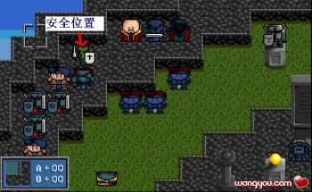
安全位置（第5回合战场形势图：左上）
莎拉如果赶到，可以将她传送到希尔法那边去。
接着魔鬼靠近索尔，必须使用Save/Load，让索尔用神雷术干掉魔鬼（最多只能留一个魔鬼防过去到希尔法那边，否则神圣之水可能不够用）。
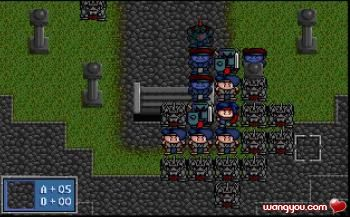
神雷术的靶子（第14回合战场形势图：下方）
现在索尔可以向希尔法方向移动，路上干掉可能威胁希尔法的人物，然后就可以清场了。
最后我还剩下三个神圣之水，正好全部给索尔。如果不足三个，下一关就得多一个人出战（为打第24关，索尔必须有三个神圣之水）。
第23关 向天空之旅
胜利条件：消灭机甲队长
失败条件：索尔死亡 希尔法死亡 罗德曼死亡 卡里斯死亡
出场人物：索尔、希尔法、罗德曼（战场加入）、卡里斯（战场加入）
战场分析：本关没有什么好说的，难度非常简单。宝物中只有一个天之袍还可以。
15回合内消灭机甲队长，可以得到卡里斯加入。
战斗流程：希尔法用传送法杖传送索尔去拣天之袍，然后索尔直扑机甲队长。先干掉两个会回复的机甲守卫，然后单挑机甲队长。
万军丛中取上将首级（第11回合战场形势图）
第24关 在天空的彼方
胜利条件：敌全灭
失败条件：索尔死亡
出场人物：索尔
战场分析：本关敌人的恶魔和法师对索尔造成威胁。战场地形也比较小，不能展开游击战。因此需要以血搏血，和对手拼法术，干掉恶魔和法师。
索尔需要携带三个神圣之水和一个水晶粒进入战场。
战斗流程：索尔要在飞行大陆下半部分移动，这样可以使上方来的敌人和下方来的敌人不在同一时间到达，打一个时间差。只管把神雷术向敌人头上招呼。如果HP到了非常危险的程度，再用神圣之水回复。
本关坐标（21，23）处有风精之羽，从敌人身上还可以获得一个。（这是索尔能拿到的第九、第十个风精之羽，移动力上升到16）。
第25关 火焰的审判
胜利条件：敌全灭
失败条件：索尔死亡 圣寇拉斯死亡
出场人物：索尔、希尔法、圣寇拉斯（战场加入）
战场分析：这一关并不难，只是要注意拿炎龙剑（坐标：11，2。只有索尔能拿到）。本关坐标（6，26）处还有一个风精之羽。（这是索尔能拿到的第十一个风精之羽，移动力上升到17）。
战斗流程：开局后，圣寇拉斯向下移动，索尔将他和希尔法传送到战场右下角，这里是安全地方。
然后索尔慢慢清场。清场时注意敌人的巫师，用圣光弹消灭他们，不要被他们的咒杀干掉。
打到还剩火魔神和一个骑士时，不要干掉骑士，先干掉火魔神，然后将骑士引到炎龙剑下方四格处，然后索尔利用高移动力的优势开溜。骑士会停在原地休息。索尔一路回到右下，与希尔法会合，用希尔法的传送法杖传送索尔到炎龙剑处。等到索尔拿到炎龙剑后，用圣光弹干掉最后一个骑士过关。
笨骑士，为什么要停在圣光弹的攻击范围内（第64回合战场形势图）。
第26关 未知的回廊
胜利条件：敌全灭
失败条件：索尔死亡 悠妮死亡 亚奇梅吉死亡
出场人物：索尔、悠妮、盖亚、亚奇梅吉
战场分析：这一关我第一次挑战时觉得很难，因为要保护悠妮，而敌人都是主动进攻型的，所以安排了好几个人参战，给每个人还买了光之斧等道具。后来第二次又打，才发现敌人虽然有很多飞行兵种，但都是冲着索尔来的，只要索尔在战场左半部分活动，右下角就是安全地带。于是，战斗马上变得非常简单。看来我对炎龙II的了解还是不够啊！
战前要给盖亚装备控制中枢，用于收渥德。
战斗流程：
第1回合：索尔传送盖亚到渥德下方，盖亚休息，渥德加入我军。让渥德将身上的武器防具都交给盖亚。
渥德加入（第2回合战场形势图）
第2、3回合，索尔将悠妮、亚奇梅吉传送到屏幕右下角的位置，只要索尔不将敌人引过来，这里就是安全位置。
这是安全位置（第4回合战场形势图）
以后索尔就在战场左半部分活动，敌人的部队会朝着他去的，让索尔慢慢解决掉所有主动攻击的部队，然后就可以清场了。
第27关 命运的交汇点
胜利条件：敌全灭
失败条件：索尔死亡 悠妮死亡
出场人物：索尔、悠妮
战场分析：本关要将天空之钥给悠妮带上，这是进入第30关的方法。
本关坐标（17，48）处有风精之羽。（这是索尔能拿到的第十二个风精之羽，也是最后一个，移动力上升到18）。
战斗流程：本关非常简单，一开始将悠妮传送到坐标（9，0）处，这是安全地方，然后索尔慢慢清场即可。
安全位置（第2回合战场形势图）
第28关 探索者
胜利条件：消灭两个机甲队长
失败条件：索尔死亡 悠妮死亡
出场人物：索尔、悠妮、希尔法、圣寇拉斯、卡里斯、渥德＋任意14人。
战场分析：本关开始系统会强制复活全部人物。因此不得不选择众多人物出战。必须出战的人物是：索尔、悠妮、希尔法、圣寇拉斯、卡里斯和渥德。后四人是下一关保护悠妮用的。
战斗流程：先传送除索尔、悠妮、希尔法、圣寇拉斯、卡里斯和渥德以外的其他人去送死，然后用希尔法传送索尔到机甲队长身边，干掉机甲队长过关。
第29关 无边的黑暗中
胜利条件：解除防卫系统
失败条件：索尔死亡 悠妮死亡
出场人物：索尔、悠妮、希尔法、圣寇拉斯、卡里斯、渥德
战场分析：本关首先要求悠妮在上方的控制中心（石碑）前休息三个回合。然后击败出现的三头龙。
由于悠妮非常脆弱，所以不能让任何人攻击到悠妮。
战斗流程：战斗开始，先卸掉索尔的防具，这时索尔的DP比大部分敌人的AP要稍微低一点，这样可以利用索尔的反击一回合干掉更多的敌人。
索尔先干掉下方左右两侧的12个敌人（4个主动攻击，8个反击）。然后索尔向上慢慢清场，干掉主通道上的所有敌人。
控制中心附近的敌人清空后，希尔法依次传送卡里斯、圣寇拉斯、渥德和悠妮到控制中心附近。圣寇拉斯、卡里斯和渥德站在石碑下方两格处掩护悠妮，索尔站在石碑下方九格处堵住敌人上来的道路。然后让悠妮去开启控制中心。
敌人援军出现，唯一要注意的是两个弓箭手，索尔干掉一个，圣寇拉斯要先下来堵住另一个，让弓箭手不能去攻击悠妮，索尔再干掉另外一个弓箭手。
控制中心开启后，索尔回去将悠妮传送到下方希尔法附近。卡里斯等人将身上的神圣之水交给索尔，让索尔带满神圣之水后，让他们去三头龙那里送死。希尔法也上来送死。
最后索尔单挑三头龙过关。
第30关 传说的终章
胜利条件：击败空魔神
失败条件：索尔死亡 悠妮死亡
出场人物：索尔、悠妮
战场分析：本关的目标只有一个：打倒空魔神！
战斗流程：首先传送悠妮到安全的地方。
安全位置（第2回合战场形势图）
然后索尔单挑诸魔神。
过关情况：
通关后的数据
索尔的能力：
我军人物：29人
索尔、悠妮、亚雷斯、盖亚、哈诺、希莉亚、玛琳、贝克威、凯丽、洛娜、莱汀、索非亚、米亚斯多德、珊、哈瓦特、塞可邦勒、蜜蒂、凯拉斯、约拿、兰斯洛特、巴拿罗西亚、谢多、希尔法、罗兰、莎拉、卡里斯、圣寇拉斯、亚奇梅吉、渥德
总出战人物（指玩家能操作的人物）：118人
第1关：6人 第2关：5人 第3关：2人 第4关：1人
第5关：2人 第6关：1人 第7关：2人 第8关：3人
第9关：1人 第10关：2人 第11关：5人 第12关：2人
第13关：6人 第14关：5人 第15关：2人 第16关：2人
第17关：3人 第18关：5人 第19关：2人 第20关：3关
第21关：11人 第22关：5人 第23关：4人 第24关：1人
第25关：3人 第26关：4人 第27关：2人 第28关：20人
第29关：6人 第30关：2人
平均每关3.93人。
（主要原因是第21关出战人数太多。第28关强制20人复活出战）
（附录）游戏强制出战人数：
第1关：6人（索尔、悠妮、亚雷斯、盖亚、哈诺、哈瓦特）
第2关：1人（索尔）
第3关：2人（索尔、希莉亚）
第4关：1人（索尔）（不救铁诺）
第5关：2人（索尔、玛琳）
第6关：1人（索尔）
第7关：2人（索尔、贝克威）
第8关：2人（索尔、洛娜）（不救凯丽）
第9关：1人（索尔）（莱汀迅速被干掉不算）
第10关：2人（索尔、莱汀）
第11关：5人（索尔、莱汀、希莉亚、珊、索菲亚）
第12关：1人（索尔）
第13关：2人（索尔、米亚斯多德）
第14关：2人（索尔、哈瓦特）
第15关：1人（索尔）
第16关：2人（索尔、塞可邦勒）
第17关：1人（索尔）（不收蜜蒂）
第18关：1人（索尔）
第19关：2人（索尔、巴拿罗西亚）
第20关：2人（索尔、谢多）（不收达克塞）
第21关：4人（索尔、约拿、希尔法、罗兰）
第22关：3人（索尔、希尔法、莎拉）
第23关：4人（索尔、希尔法、罗德曼、卡里斯）
第24关：1人（索尔）
第25关：3人（索尔、希尔法、圣寇拉斯）
第26关：3人（索尔、悠妮、亚奇梅吉）
第27关：2人（索尔、悠妮）
第28关：20人（索尔、悠妮＋18人）
第29关：2人（索尔、悠妮）
第30关：2人（索尔、悠妮）
合计：83人，平均每关2.77人。
遗憾与缺陷：
铁诺和达克塞未能加入队伍。（罗德曼不能算遗憾吧，^_^）
有一些宝物没有拿到。
出战人数还可以再削减一点。
使用了最大补丁（可以不用）
下一个目标：使用悠妮尝试单人通关
写在最后的话
历经艰辛，终于完成了炎龙II单人极限通关。
在通关过程中，我使用了最大成长补丁，但通关之后发现其实完全没有必要。对于索尔来说，攻击力一点也不成问题。级别加武器加力量药水的结合，可以保证他干掉任何敌人，防御力和生命值比较重要，但也不是那么紧张，只要S/L少量次数，也能达到理想结果。所以，不使用最大成长补丁的流程和使用应该差不多。
炎龙II的确是一款优秀的游戏，汉堂也是一个优秀的公司。可是汉堂已经不再制作战棋游戏了。因此，炎龙骑士团III也就成了我们永远的奢望。比较现在电视游戏平台上屡屡出现的大作：如《泪之腕轮物语－贝拉威克传说》、《第3次机器人大战α》等，PC平台的游戏战棋游戏越来越少。希望各游戏公司能够多开发一些好的战棋游戏，或者将优秀的电视游戏移植过来也好啊！
权当一个战棋游戏狂的痴语。 |